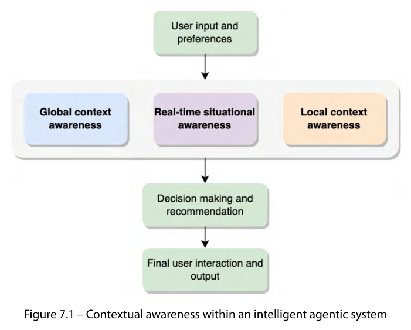
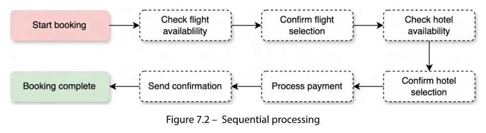
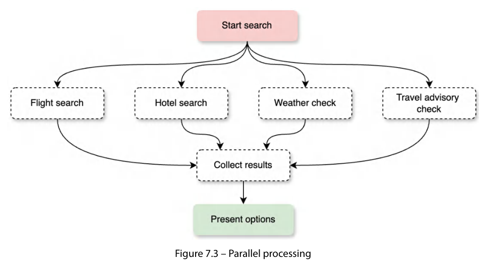
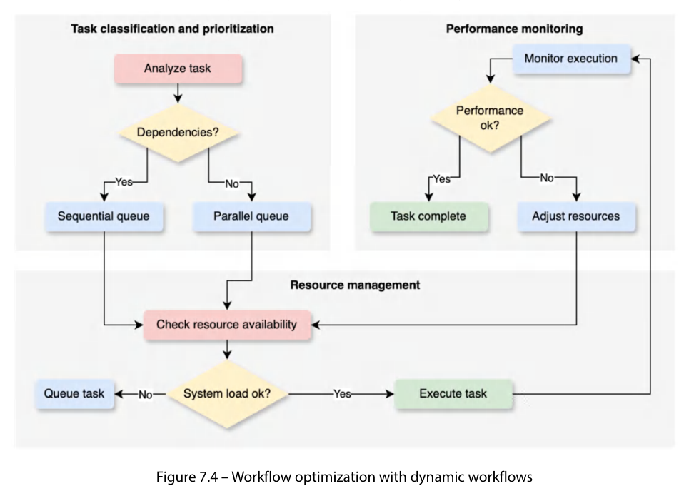

In traditional multi-agent systems, behaviours are explicit code; in LLM-based CWD systems they are controlled by prompts and interaction patterns. Three foundations: system prompts, instruction formatting, interaction patterns.
System prompts are the fundamental configuration layer: unlike regular task prompts, they set an agent's persistent traits, boundaries and behavioural frameworks across its operational life cycle. In the travel planner every agent's system prompt must include:
Example: the flight booking worker's prompt has flight search parameters, pricing considerations, airline partnerships; the Coordinator's prompt has high-level planning and oversight. In CrewAI, role (functional boundaries) + backstory (context/expertise, e.g., "former airline revenue management expert...") together form a rich system prompt.
Clear, consistent formats give reliable performance and inter-agent communication (instructions are interpreted via NL understanding). Key aspects:
| Aspect | Purpose | Format example |
|---|---|---|
| Input structuring | Standard formats for task assignments/requests — unambiguous search parameters. | { "task_type": "flight_search",
"parameters": { "departure": "location",
"destination": "location",
"dates": "date_range" } } |
| Output templates | Consistent, parseable response structures; quick status identification. | { "status": "completed/failed",
"result": { "options": [...],
"recommendations": [...],
"constraints": [...] } } |
| Communication protocols | Formats for inter-agent messages and status updates: type, sender, recipient, structured content. | { "message_type": "update",
"sender": "flight_booking_worker",
"recipient": "coordinator",
"content": { "progress": "in_progress",
"completion": "60%",
"pending_tasks": [...] } } |
CWD adapts early role-based research to LLM agents: well-defined roles, specialised workers under coordinator oversight, delegators managing distribution, effective communication/collaboration patterns, and implementation details (system prompts, instruction formatting) for operational success.
Focused instruction directs the agent: it lays down the objective, constraints and operating context; clarity and explicitness strongly influence performance.
Well-defined objectives are the foundation of intended functions/behaviours. Travel agent in customer service: "maximise customer satisfaction by providing personalised travel solutions and resolving queries/issues effectively", with components:
Metrics: customer satisfaction ratings, successful resolution of queries/issues, quality of personalised plans. Objectives guide prioritisation within budget, time, logistical constraints.
Detail steps, expected outputs and potential challenges so the agent knows its duties.
| Task | Steps | Expected outputs | Potential challenges |
|---|---|---|---|
| Customer interaction & inquiry handling | I. Greet; II. gather info (preferences, budget, dates); III. identify nature of inquiry; IV. provide responses/solutions; V. confirm satisfaction. | Clear concise responses; personalised recommendations/itineraries; booking confirmations/updates. | Ambiguous/incomplete requests; language barriers; conflicting preferences/constraints; emotional or dissatisfied customers. |
| Flight & accommodation booking | Search flights/accommodation by preferences; compare (price, duration, amenities, ratings); present top choices; confirm and book. | Confirmed flight/hotel bookings; itinerary with travel details; invoices/receipts. | Limited availability; fluctuating prices; changes/cancellations; groups/special accommodations. |
The backbone of intelligent behaviour: understanding environment, user needs and situational nuances; maintaining global and local contexts (international restrictions, seasonal weather, hotel policies, local transport).

It goes beyond pattern matching: it transforms standard service into curated experiences.
Defines how an agent maintains and updates its understanding of the current situation, available actions and potential outcomes; track relevant information while avoiding complexity. Travel agent state space:
| Customer profile state | Travel context state | Booking state |
|---|---|---|
| Personal preferences & constraints Travel history & feedback Current interaction context Budget parameters & flexibility Special requirements | Flight options & pricing Hotel availability & rates Weather & forecasts Travel advisories & restrictions Seasonal events & peak periods | Reservation status & confirmations Payment info & status Cancellation policies & deadlines Itinerary modifications Connection dependencies |
The state space should capture both static and dynamic elements efficiently. Example JSON state:
{ "booking_id": "BK123456", "status": "confirmed",
"components": {
"flights": [{ "status": "confirmed", "departure": "2024-05-15T10:00:00",
"cancellation_deadline": "2024-05-01", "dependencies": ["hotel_check_in"] }],
"hotels": [{ "status": "pending", "check_in": "2024-05-15", "cancellation_policy": "48h_notice" }] },
"customer_preferences": { "seat_type": "window", "meal_requirements": "vegetarian",
"room_preferences": ["high_floor", "non_smoking"] } }
States are "moment-in-time" knowledge about a task; the environment is the larger context (tools available, policies/rules, use-case details).
A detailed representation of the world in which the agent operates. Three fundamental questions: (1) What systems/services can the agent interact with? (2) What rules and constraints govern the interactions? (3) What changing conditions must it monitor and respond to?
Travel agent: connections to airline booking systems, hotel reservation platforms, payment processors; business rules; awareness of price changes and availability. A good model enables: informed decisions on current conditions, navigating complex systems, responding to changes, maintaining compliance, optimising within constraints.
| Static environment elements (rarely change) | Dynamic environment elements (need real-time monitoring) |
|---|---|
| Business rules & constraints: booking policies & procedures; payment processing requirements; cancellation/modification rules; service level agreements; regulatory compliance. System interfaces: API endpoints & specifications; database schemas & relationships; authentication mechanisms; error-handling protocols; rate limits & quotas. |
Resource availability: real-time inventory; pricing fluctuations; service disruptions; weather; local events. System performance: response times & latency; error rates & failures; resource utilisation; queue lengths & processing times; system health indicators. |
Agent responds dynamically to environment changes; instead of constant polling it receives and processes events as they occur (airline updates flight status, hotel room becomes unavailable → immediate state updates).
class TravelAgentState:
def update_booking_status(self, event):
if event.type == "FLIGHT_CHANGE":
self.check_dependencies()
self.notify_customer()
elif event.type == "WEATHER_ALERT":
self.evaluate_alternatives()
self.update_recommendations()
FLIGHT_CHANGE → method processes it → checks effect on hotel bookings/transfers → notifies customer automatically.WEATHER_ALERT → evaluates impact on travel → finds alternative dates/destinations → updates recommendations.Ensures the agent's understanding stays accurate: valid state transitions, maintained dependencies, business rules followed — a gatekeeper before state changes are applied.
def validate_state_transition(current_state, new_state):
if not is_valid_transition(current_state, new_state):
raise InvalidStateTransition("Invalid transition from {current_state} to {new_state}")
check_state_dependencies(new_state)
validate_business_rules(new_state)
| Check | Example |
|---|---|
| Transition validation | "on hold" → "confirmed": Is payment received? Seats still available? Price still valid? |
| Dependency checking | Flight + hotel: hotel check-in after flight arrival; transfer availability matches flight time; room type matches number of travellers. |
| Business rules | International booking: passport information provided; travel insurance offered; cancellation policy acknowledged. |
If any check fails, the state change is blocked and an error raised → booking integrity maintained.
Success depends on representing state and environment and adapting: consider static + dynamic elements, robust integration patterns, effective monitoring — keeping the agent reliable, efficient and responsive as the environment evolves.
Memory enables coherent interactions and informed decisions from past experience and current context. Three memory types: short-term, long-term, episodic.
| Memory type | Purpose | Travel agent example |
|---|---|---|
| Short-term (working) memory | Immediate cognitive workspace; temporarily holds info for the current interaction/task; conversation context, multi-step processes, active sessions; cleared when session ends or info becomes irrelevant (efficient resource use). | Current search criteria, recently viewed options, temporary preferences during the session, booking-process state. |
| Long-term memory (knowledge base) | Persistent repository across interactions/sessions; accumulated knowledge, learned patterns, customer relationships; consistency and personalisation without repeating preferences. | Customer preferences over multiple bookings, past travel records, destination knowledge, seasonal patterns, provider relationships. |
| Episodic memory (interaction history) | Stores specific interactions, events and outcomes as discrete episodes with temporal sequence & context; learn from past experience; pattern recognition on behaviour and outcomes; common in conversational interfaces/chatbots. | Identify successful booking patterns, common customer journeys; avoid repeat issues (e.g., problem layover times at certain airports). |
# Short-term memory
class WorkingMemory:
def __init__(self):
self.current_interaction = {'customer_id': None, 'session_start': None,
'current_query': None, 'active_searches': [], 'temporary_preferences': {}}
def update_context(self, new_information): # update current interaction context
self.current_interaction.update(new_information)
def clear_session(self): # reset temporary session data
self.__init__()
# Long-term memory
class CustomerMemory:
def __init__(self):
self.profiles = {'preferences': {}, 'travel_history': [], 'feedback_history': [],
'special_requirements': {}, 'loyalty_status': None}
def update_profile(self, customer_id, new_data): # merge new info with existing profile
self.profiles[customer_id] = {**self.profiles.get(customer_id, {}), **new_data}
class TravelKnowledge:
def __init__(self):
self.destination_info = {}; self.seasonal_patterns = {}
self.service_providers = {}; self.travel_regulations = {}
def update_knowledge(self, category, key, value):
getattr(self, category)[key] = value
# Episodic memory
class EpisodicMemory:
def __init__(self): self.interaction_history = []
def record_interaction(self, interaction_data):
interaction_data['timestamp'] = datetime.now()
self.interaction_history.append(interaction_data)
def retrieve_relevant_episodes(self, context): # similar past interactions
return [e for e in self.interaction_history if self._is_relevant(e, context)]
Context hierarchy
| Level | Contents |
|---|---|
| Global context | System-wide settings & constraints; current operational status; global travel alerts and advisories. |
| Session context | Current customer-interaction state; active searches/queries; temporary preferences & constraints. |
| Task context | Specific booking details; current step in multi-step processes; related bookings & dependencies. |
Context switching — smooth transition between contexts while preserving coherence:
Tasks handled in a defined order, each step depending on the completion of previous ones. Needed for: (1) Flight & hotel coordination — confirm flight availability before booking hotels; transfers aligned with arrival times; validate visa requirements before finalising; (2) Payment processing — verify funds → process payment → confirm bookings → send confirmation documents.

Drawback: inefficient when many independent operations could run simultaneously.
Multiple independent tasks handled simultaneously → better efficiency and response times. (1) Concurrent searches — multiple airline systems, different hotel chains, weather forecasts & travel advisories; (2) Background processing — update customer profiles, process feedback & reviews, monitor price changes, update travel advisories.

| Sequential | Parallel |
|---|---|
| Use when tasks have dependencies (payment → confirmation) | Use for independent tasks (multi-vendor searches) |
An agent must dynamically switch modes depending on task requirements, system load and time constraints → workflow optimisation.

Goal: workflows that are efficient, resilient and adaptable.